10_RK3399_PCIe_Host驱动分析_设备枚举#
RK3399_PCIe_Host驱动分析_设备枚举#
参考资料：
《PCI Express Technology 3.0》，Mike Jackson, Ravi Budruk; MindShare, Inc.
《PCIe扫盲系列博文》，作者Felix，这是对《PCI Express Technology》的理解与翻译
《PCI EXPRESS体系结构导读 (王齐)》
《PCI Express_ Base Specification Revision 4.0 Version 0.3 ( PDFDrive )》
《NCB-PCI_Express_Base_5.0r1.0-2019-05-22》
开发板资料：
https://wiki.t-firefly.com/zh_CN/ROC-RK3399-PC-PLUS/
本课程分析的文件：
linux-4.4_rk3399\drivers\pci\host\pcie-rockchip.c
1. PCIe控制器的资源#
上节视频我们分析了PCIe控制器驱动程序pcie-rockchip.c，它解析了设备树，得到了如下资源：
总线资源：就是总线号，从0到0x1f
内存资源：CPU地址基地址为0xfa000000，PCI地址基地址为0xfa000000，大小为0x1e00000
IO资源：CPU地址基地址为0xfbe00000，PCI地址基地址为0xfbe00000，大小为0x100000
这3类资源记录在链表中：
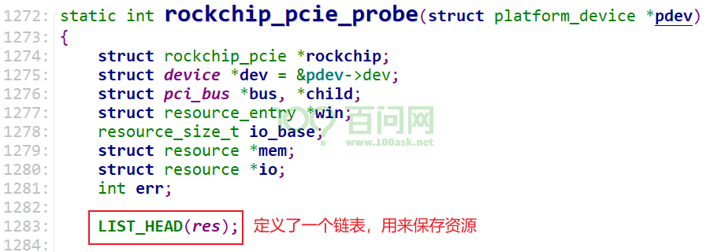
解析设备树时，把资源记录在这个链表里：
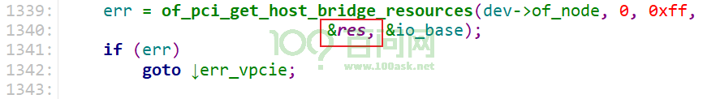
res链表中记录的资源最终会放到pci_bus->bridge->windows链表里，如下图记录：
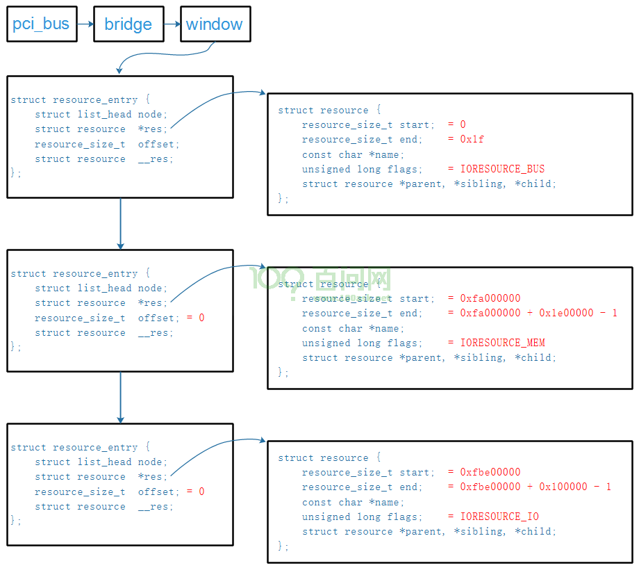
2. 设备配置空间#
本节内容参考：PCI_SPEV_V3_0.pdf
使用PCI/PCIe的目的，就是为了简单地访问它：像读写内存一样读写PCI/PCIe设备。
提问：
使用哪些地址读写设备？
这些地址的范围有多大？
是像内存一样访问它，还是像IO一样访问它？
每个PCI/PCIe设备都有配置空间，就是一系列的寄存器，对于普通的设备，它的配置空间格式如下。
里面有：
设备ID
厂家ID
Class Code：哪类设备？存储设备？显示设备？等待
6个Base Address Register：
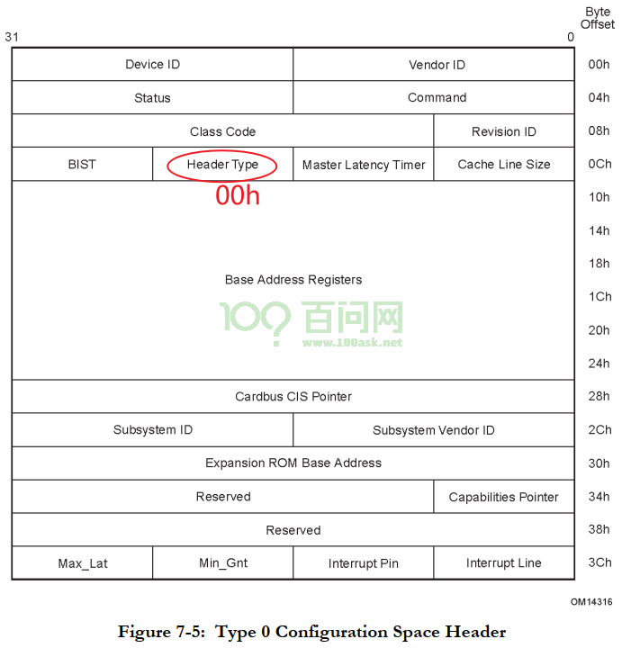
2.1 设备信息#
Vendor ID：厂家ID，PCI SIG组织给每个厂家都分配了一个独一的ID
Device ID：厂家给自己的某类产品分配一个Device ID
Revision ID：厂家自定义的版本号，可以认为是Device ID的延伸
Header Type：
b[7]: 1-它是一个多功能设备(“multi-function”)，0-它是单功能设备(“single-function”)
b[6:0]: 00h-普通设备, 01h-桥设备，这个取值也决定了配置空间中偏移地址10h开始处的含义
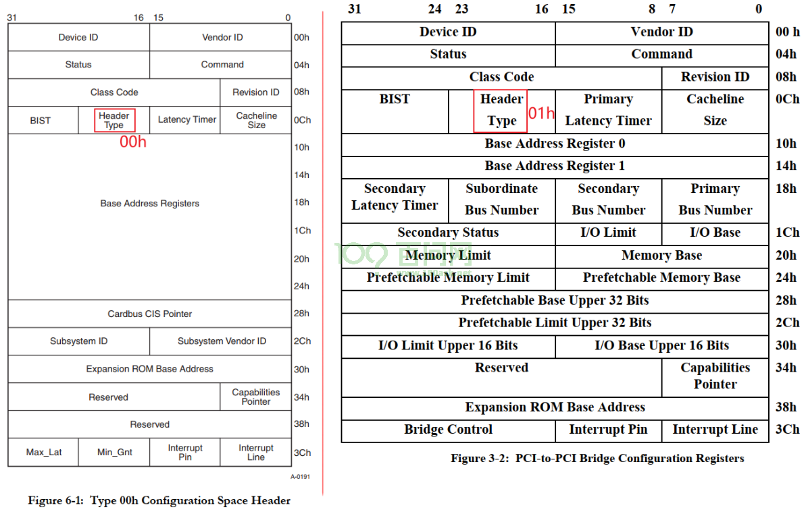
Class Code：这是只读的寄存器，它含有3个字节，用来表明设备的功能，它分为3部分
最高字节：表示”base class”，用来表示它属于内存卡、显卡等待
中间字节：表示”sub-class”，再细分一下类别
最低字节：用来表示寄存器级别的编程接口”Interface”
示例如下：Base Class为01h时，表示它是一个存储设备，但是还可以继续使用sub-class、Interface细分
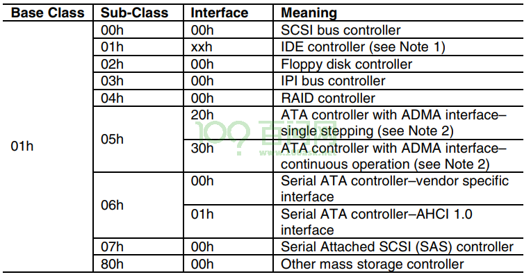
2.2 基地址(Base Address)#
普通的PCI/PCIe设备有6个基地址寄存器，简称为BAR：
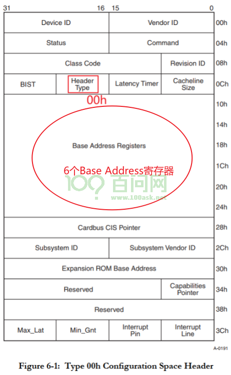
BAR用于：
声明需要什么类型的空间：内存、IO、32位地址、64位地址？
声明需要的空间有多大
保存主控分配给它的PCI空间基地址
地址空间可以分为两类：内存(Memory)、IO：
对于内存，写入什么值读出就是什么值，可以提前读取
对于IO，它反应的是硬件当前的状态，每个时刻读到的值不一定相同
BAR的格式如下：
用于内存空间
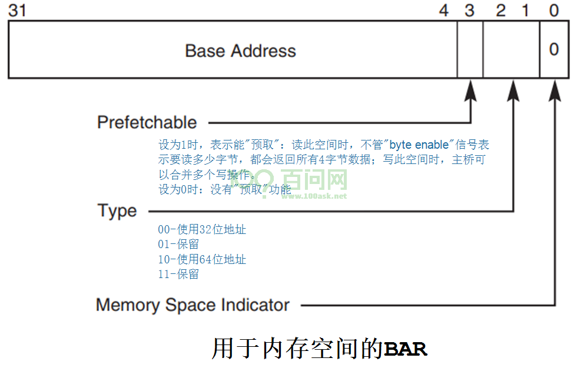
用于IO空间：
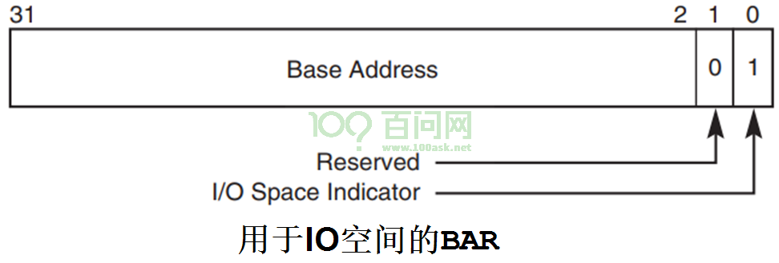
BAR怎么表示它想申请多大的空间？以32位地址为例：
软件往BAR写入0xFFFFFFFF
软件读BAR
读出的数值假设为0xFFF0,000?，忽略最低的4位，就得到：0xFFF0,0000
这表示BAR中可以写入的”Base Address”只有最高的12位
也就表示了最低的20位是可以变化的范围，所以这个空间大小为2^20=1M Byte
如果BAR表示它使用32位的地址，那么BAR0~BAR5可以分别表示6个地址空间。
如果BAR表示它使用64位的地址，那么BAR0和BAR1、BAR2和BAR3、BAR4和BAR5分别表示3个地址空间：
低序号的BAR表示64位地址的低32位
高序号的地址表示64位地址的高32位。
3. 扫描设备的过程#
3.1 核心: 构造pci_dev#
扫描PCIe总线，对每一个PCIe桥、PCIe设备，都构造出对应的pci_dev：
填充pci_dev的各项成员，比如VID、PID、Class等
分配地址空间、写入PCIe设备
pci_dev结构体如下：
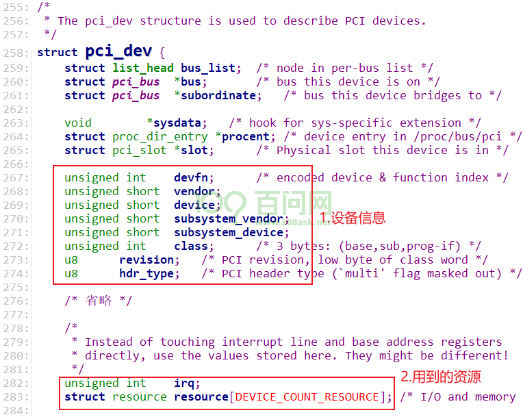
对应pci_dev结构体里的设备信息：读取PCI设备的配置空间即可获得。
对应pci_dev结构体里的资源，本节课程先不分析irq。对于resource结构体，每个成员对应一个BAR。
resource结构体如下，要注意的是：里面记录的start、end等，是基于CPU角度看待的。也就是说，如果记录的是内存地址、IO地址，那么是CPU地址，不是PCI地址。并且这些地址是物理地址，要在软件中使用它们要先执行ioremap。
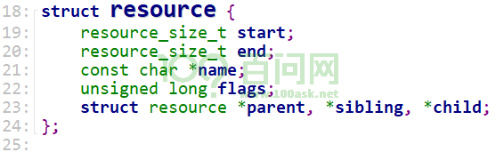
3.2 代码分析#
我们要找到这4个核心代码：
分配pci_dev
读取PCIe设备的配置空间，填充pci_dev中的设备信息
根据PCIe设备的BAR，得知它想申请什么类型的地址、多大？
分配地址，写入BAR
关键代码分为两部分：
读信息、得知PCIe设备想申请多大的空间
rockchip_pcie_probe bus = pci_scan_root_bus(&pdev->dev, 0, &rockchip_pcie_ops, rockchip, &res); pci_scan_root_bus_msi pci_scan_child_bus pci_scan_slot dev = pci_scan_single_device(bus, devfn); dev = pci_scan_device(bus, devfn); struct pci_dev *dev; dev = pci_alloc_dev(bus); pci_setup_device pci_read_bases(dev, 6, PCI_ROM_ADDRESS); pci_device_add(dev, bus);
分配空间
rockchip_pcie_probe
pci_bus_size_bridges(bus);
pci_bus_assign_resources(bus);
__pci_bus_assign_resources
pbus_assign_resources_sorted
/* pci_dev->resource[]里记录有想申请的资源的大小,
* 把这些资源按对齐的要求排序
* 比如资源A要求1K地址对齐，资源B要求32地址对齐
* 那么资源A排在资源B前面, 优先分配资源A
*/
list_for_each_entry(dev, &bus->devices, bus_list)
__dev_sort_resources(dev, &head);
// 分配资源
__assign_resources_sorted
assign_requested_resources_sorted(head, &local_fail_head);
3.2.1 分配pci_dev结构#
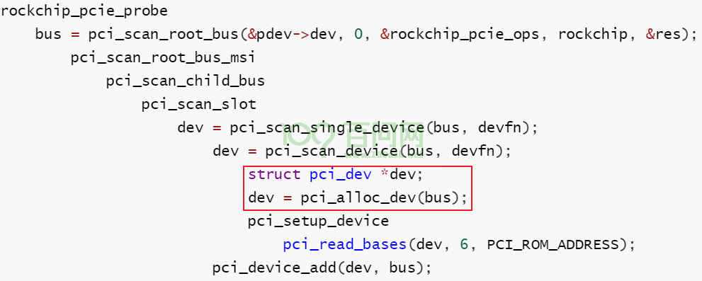
3.2.2 读取设备信息#
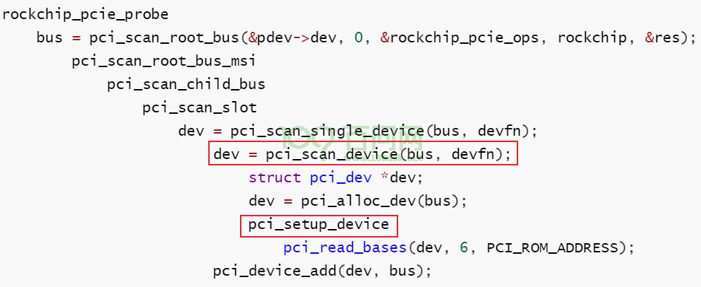
在pci_scan_device函数中，会先尝试读取VID、PID，成功的话才会继续调用pci_setup_device：
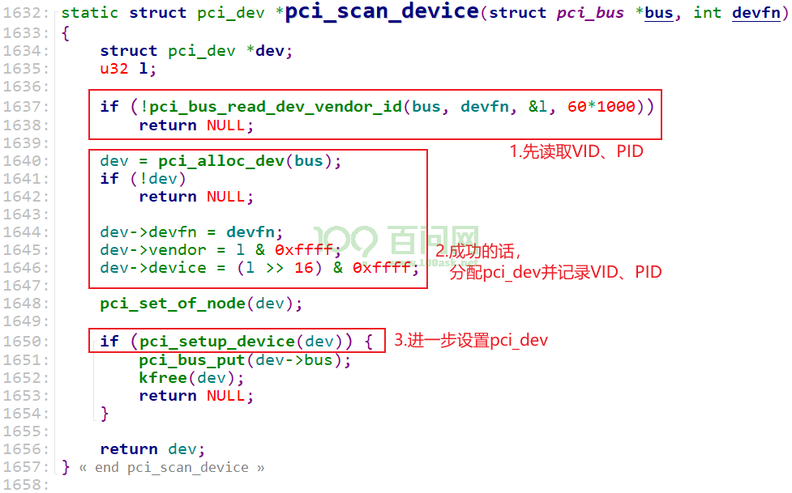
在pci_setup_device内部，会继续读取其他信息：
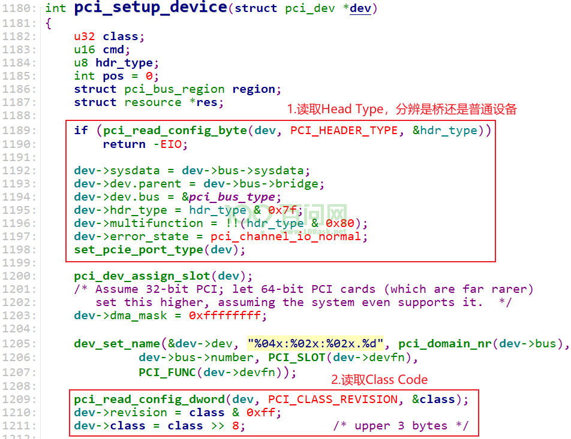
3.2.3 读BAR#
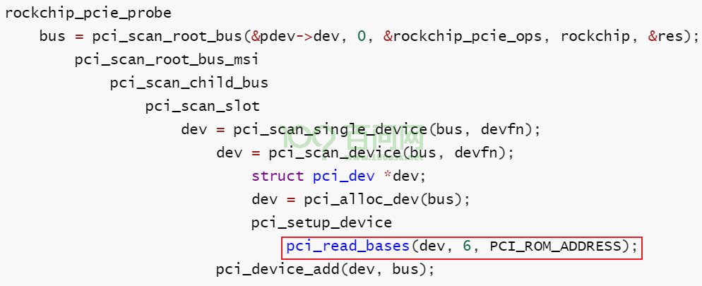
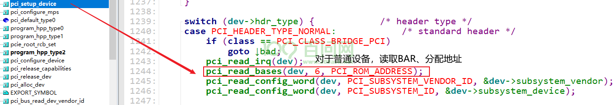
pci_read_bases函数代码分析：
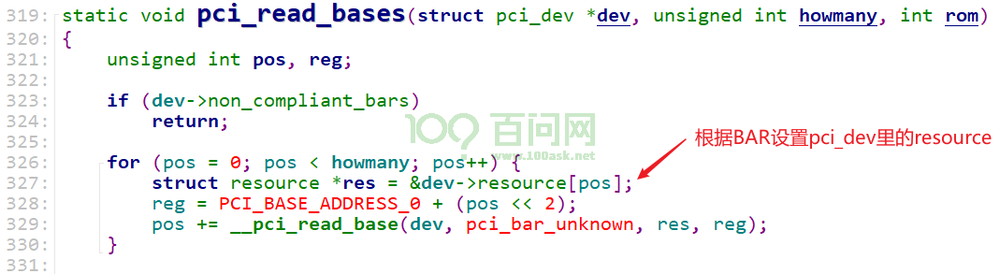
pci_read_bases函数又会调用__pci_read_base，__pci_read_base只是读BAR，算出想申请的空间的大小：
读BAR，保留原值
写0xFFFFFFFF到BAR
在读出来，解析出所需要的地址空间大小，记录在pci_dev->resource[ ]里
pci_dev->resource[ ].start = 0;
pci_dev->resource[ ].end = size - 1;
把前面讲过的贴出来，有助于理解代码：
BAR怎么表示它想申请多大的空间？以32位地址为例：
软件往BAR写入0xFFFFFFFF
软件读BAR
读出的数值假设为0xFFF0,000?，忽略最低的4位，就得到：0xFFF0,0000
这表示BAR中可以写入的”Base Address”只有最高的12位
也就表示了最低的20位是可以变化的范围，所以这个空间大小为2^20=1M Byte
以下是__pci_read_bases函数的代码分析。
得到大小(原始数据，需要进一步解析)：比如下列代码中sz被赋值为0xFFF0,000?，需要进一步解析
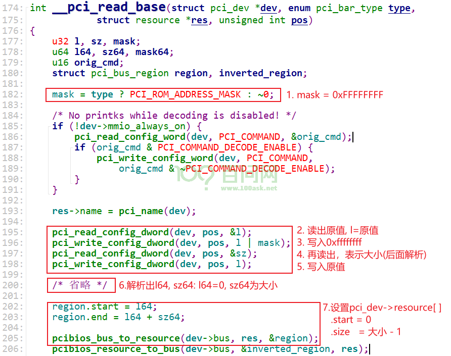
3.2.4 分配地址空间#
这部分代码的函数调用非常深，我们抓住2个问题即可：
从哪里分配得到地址空间？
在设备树里指明了CPU地址、PCI地址的对应关系，这些作为”资源”记录在pci_bus里
读BAR时，在pci_dev->resource[]里记录了它想申请空间的大小
分配得到的基地址，要写入BAR
代码调用关系如下：
把要申请的资源, 按照对齐要求排序，然后调用assign_requested_resources_sorted，代码如下：
/* 把要申请的资源, 按照对齐要求排序 * 然后调用assign_requested_resources_sorted */ rockchip_pcie_probe pci_bus_size_bridges(bus); pci_bus_assign_resources(bus); __pci_bus_assign_resources pbus_assign_resources_sorted /* pci_dev->resource[]里记录有想申请的资源的大小, * 把这些资源按对齐的要求排序 * 比如资源A要求1K地址对齐，资源B要求32地址对齐 * 那么资源A排在资源B前面, 优先分配资源A */ list_for_each_entry(dev, &bus->devices, bus_list) __dev_sort_resources(dev, &head); // 分配资源 __assign_resources_sorted assign_requested_resources_sorted(head, &local_fail_head);
assign_requested_resources_sorted函数做两件事分配地址空间
把这块空间对应的PCI地址写入PCIe设备的BAR
代码如下：
assign_requested_resources_sorted(head, &local_fail_head); pci_assign_resource ret = _pci_assign_resource(dev, resno, size, align); // 分配地址空间 __pci_assign_resource pci_bus_alloc_resource pci_bus_alloc_from_region /* Ok, try it out.. */ ret = allocate_resource(r, res, size, ...); err = find_resource(root, new, size,...); __find_resource // 从资源链表中分配地址空间 // 设置pci_dev->resource[] new->start = alloc.start; new->end = alloc.end; // 把对应的PCI地址写入BAR pci_update_resource(dev, resno); pci_std_update_resource /* 把CPU地址转换为PCI地址: PCI地址 = CPU地址 - offset * 写入BAR */ pcibios_resource_to_bus(dev->bus, ®ion, res); new = region.start; reg = PCI_BASE_ADDRESS_0 + 4 * resno; pci_write_config_dword(dev, reg, new);